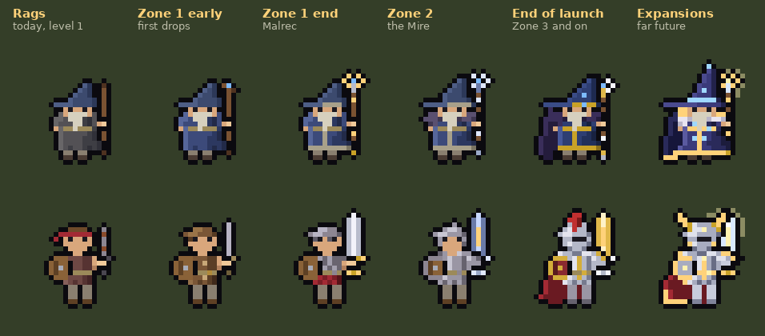
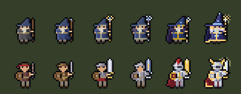

Wizard (robe) and Warrior (plate) with their weapons, from today's rags to the far future in 6 steps. Shown 6×; swipe sideways on a phone. The body stays 15 × 18 everywhere: gear grows the outline from Zone 2 on.

First column is the game today.
About how big they read on the phone (3×).

| Step | Wizard | Warrior | Weapon |
|---|---|---|---|
| Rags (today) | Grey robe. | Red bandana, cloth tunic, plank shield. | Look 1, plain. |
| Zone 1 early | Robe dyed the class blue. Same shape. | Leather cap, laced leather jerkin. Same shape. | Look 2. |
| Zone 1 end (Malrec) | Cream trim down the front and hem, a band on the hat. | Iron cap with a nose guard, mail shirt over the red tunic. | Look 4: the biggest weapon shape already. |
| Zone 2 (the Mire) | First shape change: short mantle over the shoulders, hat 1 pixel taller with a wider brim. | First shape change: open steel helm, pauldrons, breastplate, iron-rimmed shield. | Look 5: same size, new metal. |
| End of launch | Hooded cape on the back, gold trim, a star on the hat. | Closed helm with a red crest, bigger pauldrons, gold trim, crimson shield, cape. | Look 6: same size, gold metal. |
| Expansions | Tall hat with a glowing band and runes, high collar, long flared robe, gold-edged cape. | Winged helm, silver plate with gold, kite shield with a glowing crest, cape to the ground. | Look 7: pale steel and a faint glow (glow only here). |
Next after your notes: draw Zone 1's small steps (chest and head) for all 14 classes on one review page, then build them into the game.